Le Modern Work Hub est un portail digital interne conçu chez TotalEnergies pour centraliser et simplifier l'accès aux outils et ressources
liés à l'environnement Microsoft 365.
Son objectif est d'offrir un point d'entrée unique vers plusieurs plateformes jusqu'alors indépendantes,
tout en garantissant une expérience utilisateur cohérente et intuitive.
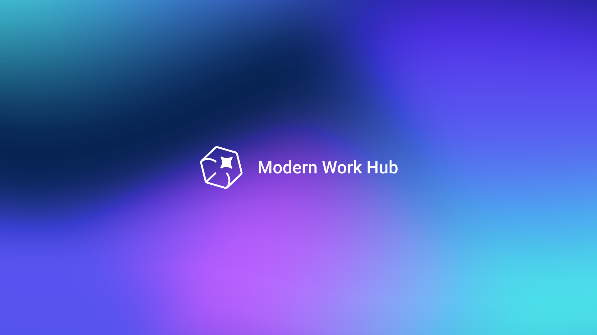
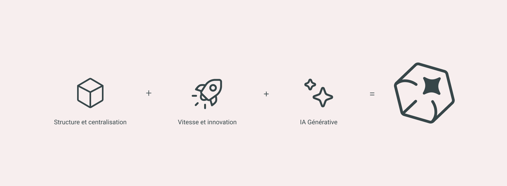
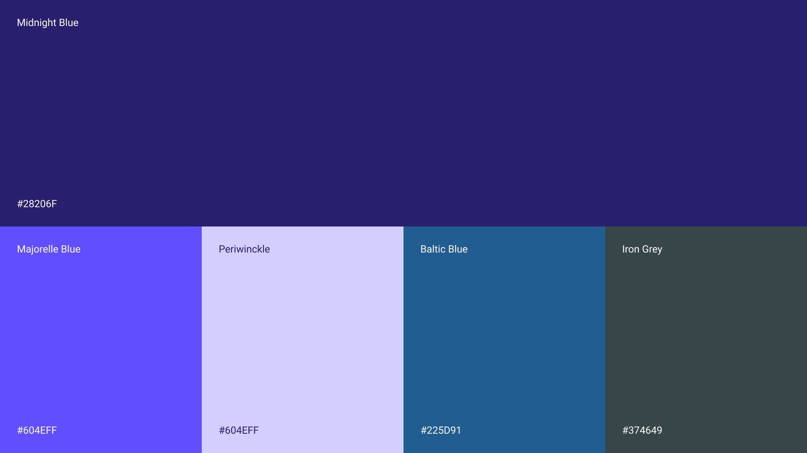
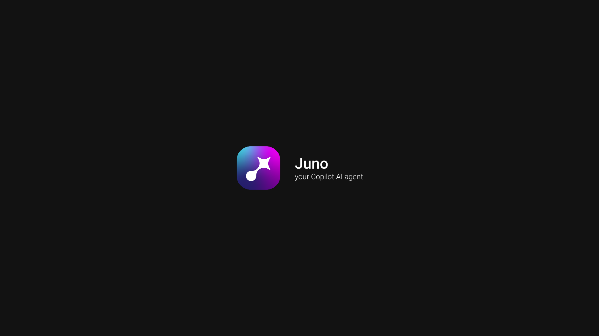
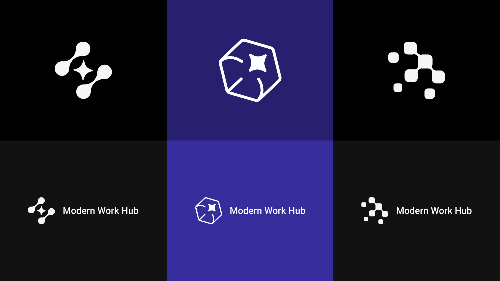
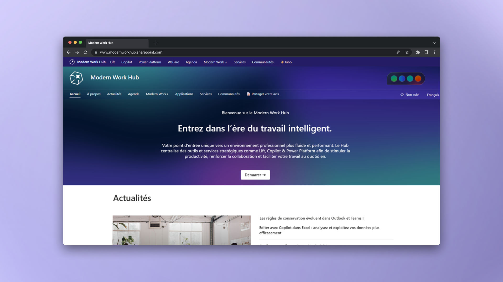
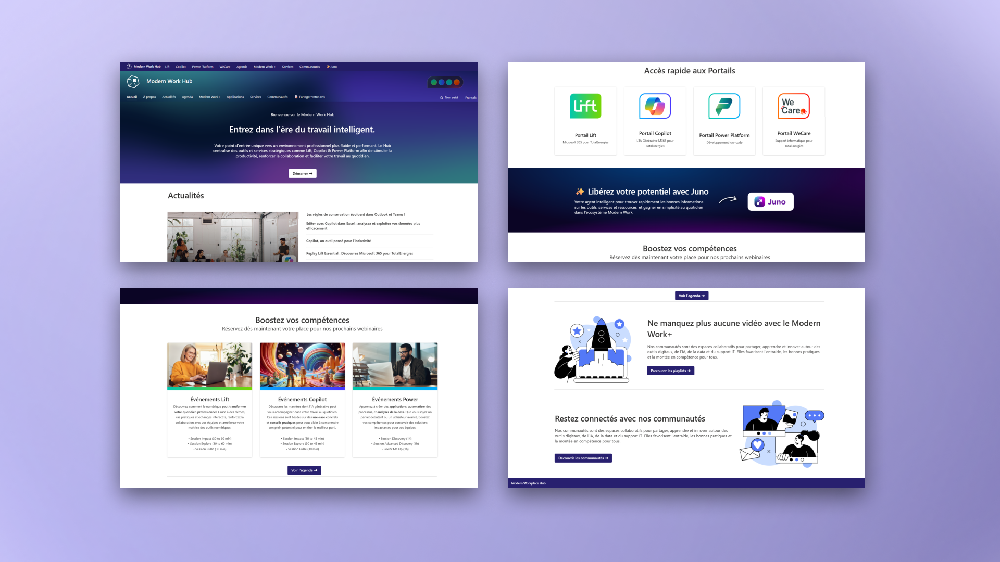
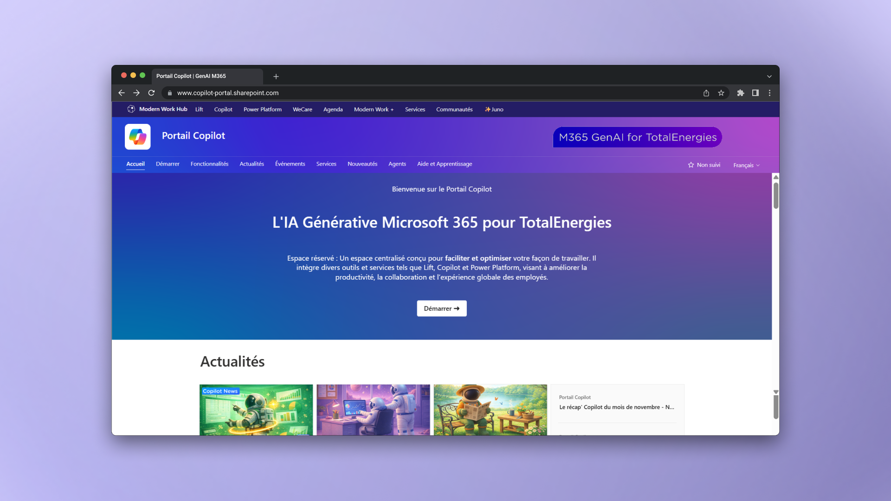
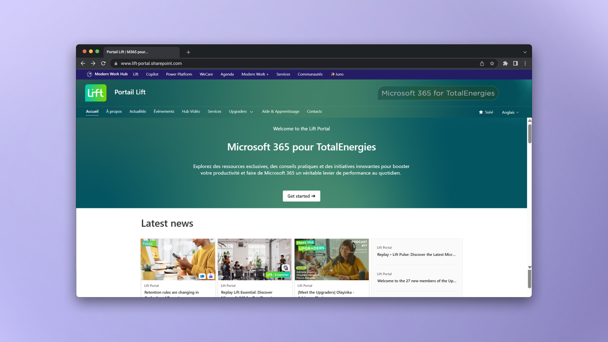
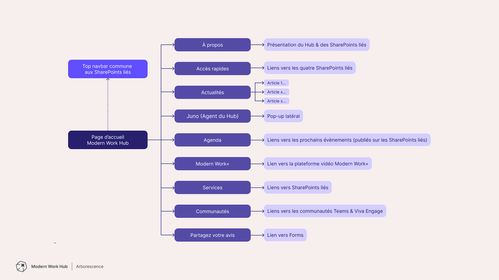
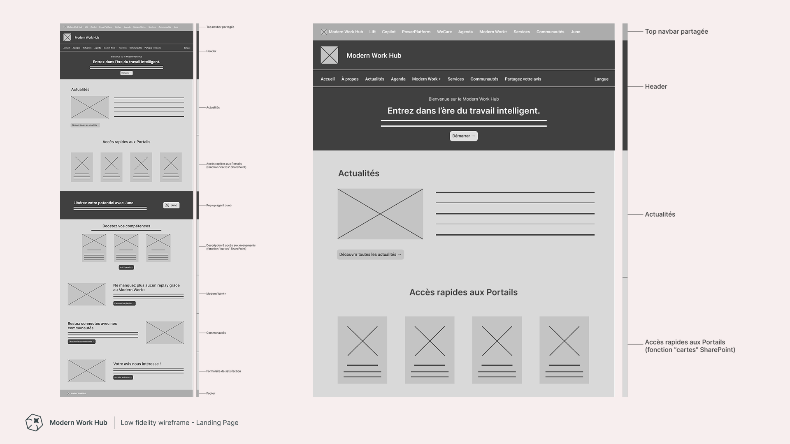